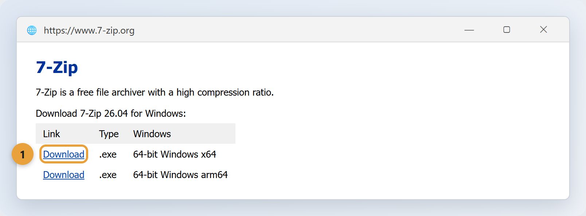
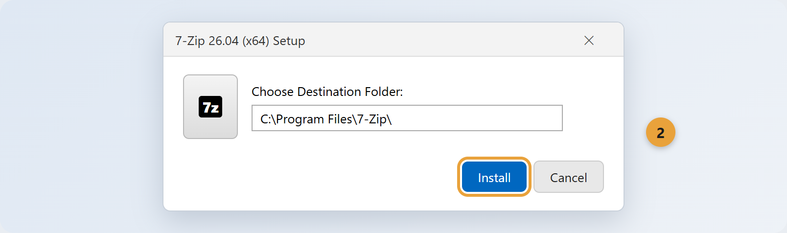
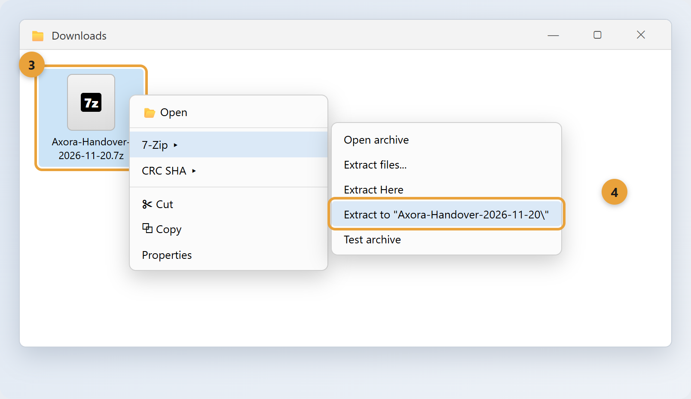
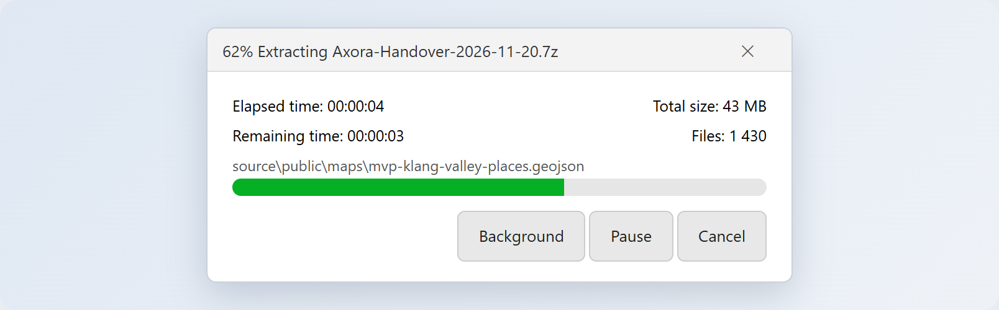
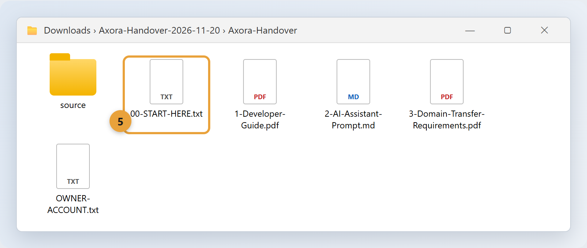
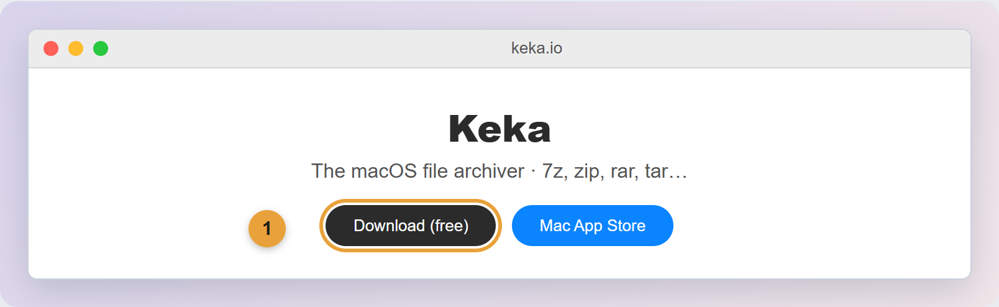
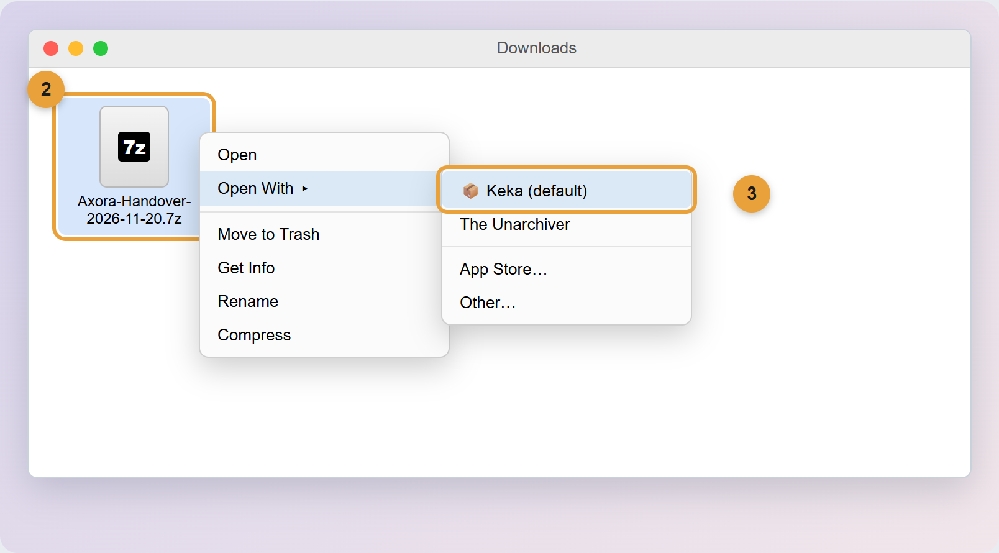
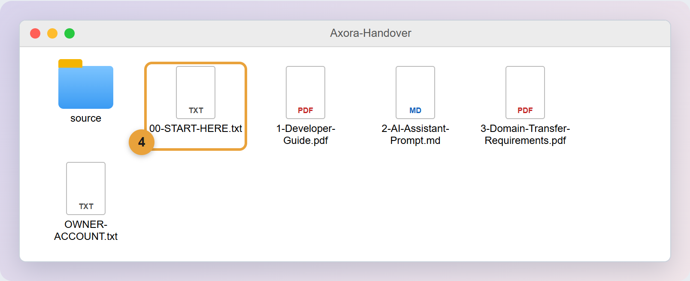
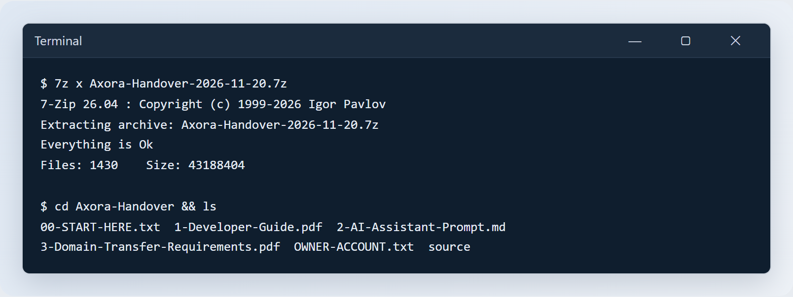

How to extract the
Axora handover file
Step-by-step for Windows and macOS · file: Axora-Handover-2026-11-20.7z
طريقة فك ضغط ملف
تسليم Axora
شرح خطوة بخطوة لنظامي ويندوز وماك
Step-by-step for Windows and macOS · file: Axora-Handover-2026-11-20.7z
شرح خطوة بخطوة لنظامي ويندوز وماك
| System | Program (free) | ملاحظات |
|---|---|---|
| Windows 10 / 11 | 7-Zip — www.7-zip.org (recommended, made by the author of the 7z format) | 7-Zip مجاني ومفتوح المصدر وهو الأفضل لهذا الملف. |
| macOS | Keka — www.keka.io (free download; paid in the Mac App Store) or The Unarchiver (free, Mac App Store) | Keka مجاني من موقعه الرسمي، أو The Unarchiver المجاني من متجر التطبيقات. |
| Linux / server | sudo apt install 7zip then 7z x Axora-Handover-2026-11-20.7z | للخوادم وأنظمة لينكس. |
Open www.7-zip.org and click Download next to 64-bit Windows x64 (use arm64 only on ARM laptops).
افتح الموقع www.7-zip.org واضغط Download بجانب 64-bit Windows x64 (اختر arm64 فقط لأجهزة ARM).

Run the downloaded file, keep the folder, click Install, then Close.
شغّل الملف الذي نزّلته، اترك المجلد كما هو، واضغط Install ثم Close.

Right-click Axora-Handover-2026-11-20.7z. On Windows 11 first click Show more options (or press Shift + F10). Choose 7-Zip then Extract to "Axora-Handover-2026-11-20\".
اضغط بزر الفأرة الأيمن على الملف. في ويندوز 11 اضغط أولاً Show more options (أو Shift + F10)، ثم اختر 7-Zip ثم Extract to "Axora-Handover-2026-11-20\".

Wait for the progress window to finish (a few seconds). It must end without errors.
انتظر حتى تنتهي نافذة التقدّم (بضع ثوانٍ) دون أي رسالة خطأ.

Open the new folder, then Axora-Handover, and start with 00-START-HERE.txt.
افتح المجلد الجديد ثم Axora-Handover، وابدأ بالملف 00-START-HERE.txt.

Download Keka from www.keka.io (free) and drag it to Applications. Or install The Unarchiver from the App Store.
نزّل برنامج Keka من الموقع www.keka.io مجاناً واسحبه إلى مجلد التطبيقات Applications، أو ثبّت The Unarchiver من متجر التطبيقات.

In Finder, right-click (or Control-click) Axora-Handover-2026-11-20.7z, choose Open With, then Keka. The first time, macOS may ask to allow Keka to access the Downloads folder: click Allow.
في Finder اضغط بالزر الأيمن (أو Control مع النقر) على الملف، واختر Open With ثم Keka. في المرة الأولى قد يطلب النظام السماح لـ Keka بالوصول إلى مجلد التنزيلات: اضغط Allow.

Keka creates the folder Axora-Handover next to the file. Open it and start with 00-START-HERE.txt.
ينشئ Keka المجلد Axora-Handover بجانب الملف. افتحه وابدأ بالملف 00-START-HERE.txt.

Copy the file to the server (for example with scp), install 7-Zip and extract:
scp Axora-Handover-2026-11-20.7z user@SERVER:/srv/
ssh user@SERVER
cd /srv && sudo apt install -y 7zip
7z x Axora-Handover-2026-11-20.7z
cd Axora-Handover/source # then follow 1-Developer-Guide.pdfانسخ الملف إلى الخادم ثم ثبّت 7-Zip وفك الضغط بالأوامر أعلاه، ثم اتبع دليل المطوّر.

The SHA-256 fingerprint must match the value in the file Axora-Handover-2026-11-20.7z.sha256 published next to the archive in the GitHub release:
# Windows PowerShell
Get-FileHash .\Axora-Handover-2026-11-20.7z -Algorithm SHA256
# macOS / Linux
shasum -a 256 Axora-Handover-2026-11-20.7zيجب أن تطابق البصمة القيمة الموجودة في ملف .sha256 المنشور مع الملف في GitHub تماماً؛ إذا اختلفت فالملف تالف أو غير مكتمل، فأعد تنزيله.
| Problem | Solution | الحل |
|---|---|---|
| "Can not open file as archive" / "Unsupported format" | Download/copy the file again (incomplete). Check the SHA-256. | الملف ناقص؛ أعد تنزيله وتحقق من البصمة. |
| "Path too long" on Windows | Extract to a short folder such as C:\Axora. | فك الضغط في مجلد قصير مثل C:\Axora. |
| macOS: "Keka can't be opened" | System Settings, Privacy & Security, Open Anyway. | إعدادات النظام ثم الخصوصية والأمان ثم Open Anyway. |
Scripts fail with ^M / bad interpreter | Do not open/save the .sh files with Notepad; extract again. | لا تحفظ ملفات .sh بالمفكرة؛ أعد فك الضغط. |